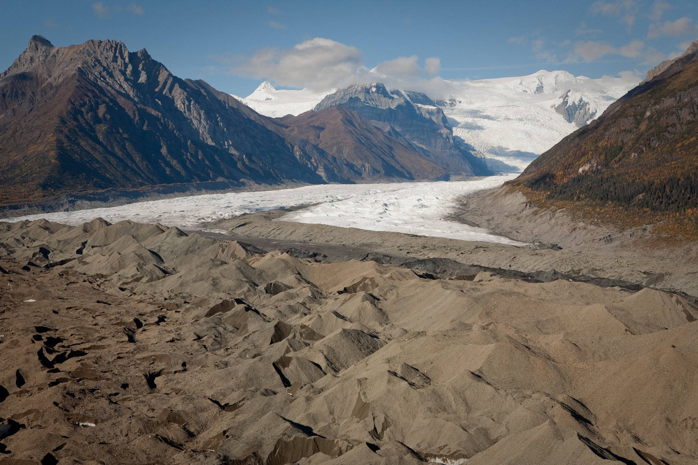

Root Glacier Trail
More information
Roof Glacier Trail Information
The main street in Kennicott turns into a well-maintained, 4-mile-long hiking trail just outside of town. This trail winds alongside the Kennicott and Root Glaciers, and hiking it is a great opportunity to experience the grandeur of the Wrangell Mountains and see more of the valley. It's a great starting point, whether you have only a few hours or are planning a multi-day glacier and mountain adventure. You will be rewarded throughout the hike with great mountain and glacier views, and have the chance to spot bears cruising on the lateral moraine below you. For an easy hike, head to Jumbo Creek; it's an easy three-mile round-trip from Kennicott and is a good destination for relaxing. The turnoff to the toe of the Root Glacier is about 15 minutes past Jumbo Creek and clearly marked. You can also pass the glacier turn-off trail and continue hiking all the way "around the bend" of the Root Glacier to get an up-close look at the Stairway Icefall that spills 6,000 feet off Mt. Regal. Along the way you'll get great views down onto the Root Glacier, where you can see and hear bizarre glacial features.
Join the chat!
// FORUM HERE